This reference builds a CUDA mental model around one array-addition example. Section 1 defines the CPU, GPU, host memory, device memory, and CUDA execution model, then places those definitions in an A100 and an RTX 3090. Section 2 develops and measures the addition kernel. Section 3 uses eight pairs of small programs to show why a GPU may wait or do unnecessary work.
GPU and CUDA
CPU and GPU interaction
A discrete GPU normally works alongside the CPU in the same computer. This is true for a data-center GPU or a workstation GPU. CUDA calls the computer that runs the CPU code the host. The host’s main RAM (random-access memory) is called host memory and normally uses DDR (double data rate) DRAM (dynamic random-access memory). A discrete GPU has separate device memory, which is also DRAM. Data-center GPUs usually use HBM (high-bandwidth memory), while consumer GPUs usually use GDDR (graphics double data rate) memory [4, 5]. This section assumes a discrete GPU. An integrated GPU may instead share system DRAM with the CPU.
The CPU runs the main program and launches a GPU kernel for work that can be split among many threads [1]. Figure 1 shows the complete interaction.
For informal discussion, this note calls kernel work either computation or logistics. These are not CUDA terms.
A computation kernel performs the numerical operation of interest.
A logistics kernel prepares data for another kernel, for example by transposing, gathering, scattering, packing, or unpacking the data.
One kernel can perform both kinds of work. Copies between host and device memory are data transfers, not kernels.
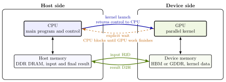
The execution sequence is
The CPU makes the input available to the GPU.
The CPU launches the kernel and continues without waiting for the GPU.
GPU threads compute the result.
The CPU calls
cudaDeviceSynchronize()and waits before reading the result.
A simple time budget for a run with no overlap is
is CPU work outside the launch and copies.
and
are the input and result copy times.
is the time the CPU spends submitting the kernel, and
is the GPU execution time. A later call to
cudaDeviceSynchronize() only makes the CPU wait for
unfinished GPU work; it does not add a second kernel execution. Data
rearrangement may add further terms. If CPU work, copies, and kernel
execution overlap, their times cannot simply be added.
Libraries and tools
Before writing a kernel, ask whether a tested implementation already exists. Use the leftmost level that provides the required operation and control.
Table 1 maps common operations to CUDA libraries [2, 16]. NCCL is the NVIDIA Collective Communications Library.
| Mathematical task | Library | Physics example | Machine-learning example |
|---|---|---|---|
| Dense matrix products | cuBLAS | basis changes, dense Hamiltonians | linear layers, batched general matrix multiplication |
| Dense solvers | cuSOLVER | least squares, eigensystems | principal component analysis, linear regression |
| Sparse algebra | cuSPARSE | sparse partial differential equation systems | graph neural networks, sparse features |
| Fourier transforms | cuFFT | spectral methods, structure factors | spectral convolution, signal features |
| Pseudorandom sampling | cuRAND | Monte Carlo and stochastic dynamics | initialization, dropout, sampling |
| Tensor contractions | cuTENSOR | many-body tensor algebra | attention, einsum layers |
| Collectives | NCCL | multi-GPU reductions | gradient all-reduce |
| Partitioned global memory | NVSHMEM | fine-grained multi-GPU exchange | model and tensor parallelism |
Before using a CUDA library, check how the library stores arrays, which numerical precision the library uses, and whether the library applies any normalization. Also check whether repeated calls with the same input must return the same result.
Choose the tool by what you need to see.
Nsight Systems shows the CPU and GPU timeline [17].
Nsight Compute analyzes one GPU kernel [18].
Compute Sanitizer detects memory-access and synchronization errors [19].
Programming model
At launch, the software defines a grid of blocks
and threads. For example,
kernel<<<6, 64>>>(arguments) creates one
grid with six blocks and 64 threads per block. Every thread runs the
kernel body. The launch does not name an SM.
The streaming multiprocessor (SM) is physical hardware. CUDA assigns each whole block to one SM, where it normally remains until it finishes. Several blocks can share an SM if resources permit. The SM divides each block into consecutive groups of 32 threads called warps. A warp is a scheduling group formed by the hardware, not an object named in the launch or a fixed component inside the SM [10].
One A100 SM can keep at most threads, or 64 warps, resident. One RTX 3090 SM can keep at most threads, or 48 warps, resident [10]. Resident means that the thread’s block is on the SM and has not finished. These numbers are capacity limits, not counts of arithmetic units. Register and shared-memory use can reduce them.
To keep the GPU busy, the program must launch enough blocks. Too few blocks leaves some SMs unused. Each active SM also needs enough resident warps to run another warp while one waits. The program chooses the grid and block sizes; CUDA chooses which SM runs each block. Figure 2 shows this mapping.
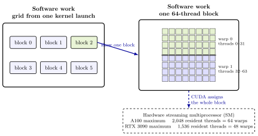
A CUDA stream belongs to one CUDA program. It is a sequence
of kernel launches and memory operations that run in submission order
[10]. A
launch that does not name a stream uses the default stream. For example,
let kernel_1 and kernel_2 stand for any two
kernels.
// Both kernels are submitted to the default stream.
kernel_1<<<grid, block>>>();
kernel_2<<<grid, block>>>();The CPU can submit both launches without waiting. On the GPU,
however, kernel_1 finishes before kernel_2
starts because both belong to the same stream.
One program can instead create two streams and place one kernel in each.
cudaStream_t stream_1, stream_2;
cudaStreamCreate(&stream_1);
cudaStreamCreate(&stream_2);
// The fourth launch argument selects the stream.
kernel_1<<<grid, block, 0, stream_1>>>();
kernel_2<<<grid, block, 0, stream_2>>>();The third launch argument, zero, requests no dynamic shared memory. The CPU again submits both launches without waiting. If the kernels are independent and the GPU has enough free resources, their execution may overlap. CUDA does not guarantee overlap.
Two separate operating-system programs are not two CUDA streams. They are separate programs competing for the same GPU. The example above uses two streams inside one program to request concurrent kernel execution.
For a one-dimensional launch, a thread’s global index is where , , and . Figure 3 shows a concrete example.
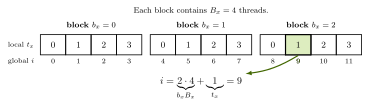
In two dimensions, Suppose the array stores all of row 0, then all of row 1, and so on. This is called row-major storage. If each row has columns, the one-dimensional index is Figure 4 shows both steps. First obtain from the block and thread coordinates, then convert to one index .
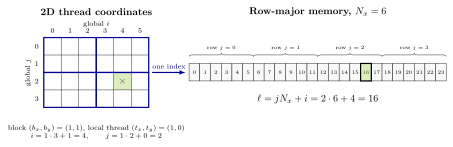
Threads in the same block can exchange data through shared memory.
__syncthreads() synchronizes those threads. No thread
continues past the barrier until every thread in the block reaches it.
CUDA may start different blocks in any order or run them on different
SMs, so this barrier cannot synchronize different blocks [12].
CUDA provides several places to store data. The locations differ in capacity, which threads can use them, and how long the data remains available. L1 and L2 mean level-1 and level-2 cache. Table 2 summarizes the storage locations.
| Storage | Which threads can use it | How long it exists | What it is |
|---|---|---|---|
| Registers | one thread | thread | fast storage inside the SM; limited amount |
| Local memory | one thread | thread | private data stored in device memory |
| Shared memory | one block | block | on-chip memory used explicitly by the kernel |
| L1 cache | threads using one SM | managed by hardware | cache used by one SM |
| L2 cache | all SMs on a device | managed by hardware | cache used by all SMs |
| Global memory | all threads on a device | until freed | large device DRAM |
| Host memory | CPU, and GPU when mapped or managed | until freed | system DRAM reached through the connection between CPU and GPU |
Capacity tells us how much data fits in each memory level. Performance also depends on how often data moves between levels. Shared memory is useful when threads reuse values loaded once. Without reuse, copying data through shared memory adds work but does not reduce the bytes moved to and from global memory.
Compute capability identifies the CUDA features and resource limits supported by a GPU. It is not a speed rating. A benchmark should therefore report the GPU model, not only the compute capability [10].
Ampere A100 and RTX 3090
The A100 uses the Ampere GA100 chip, while the RTX 3090 uses GA102. Both follow the same CUDA execution model but differ in arithmetic throughput and memory [4, 5].
The architecture diagrams show the complete chips, not the product configurations. Figure 5 shows all 128 SMs in GA100; the A100 enables 108. GA102 contains 84 SMs, while the RTX 3090 enables 82 [4, 5, 6].
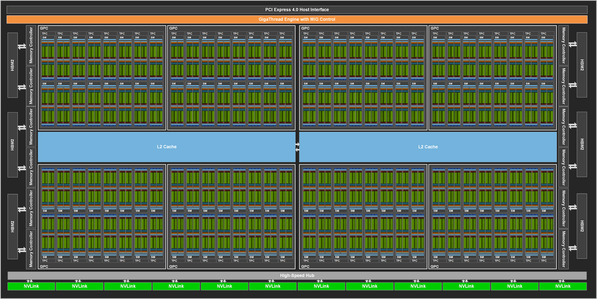
Figure 6 shows one GA100 SM. Its four sections share the L1 cache and shared memory. A block remains on the SM while its warps run there.
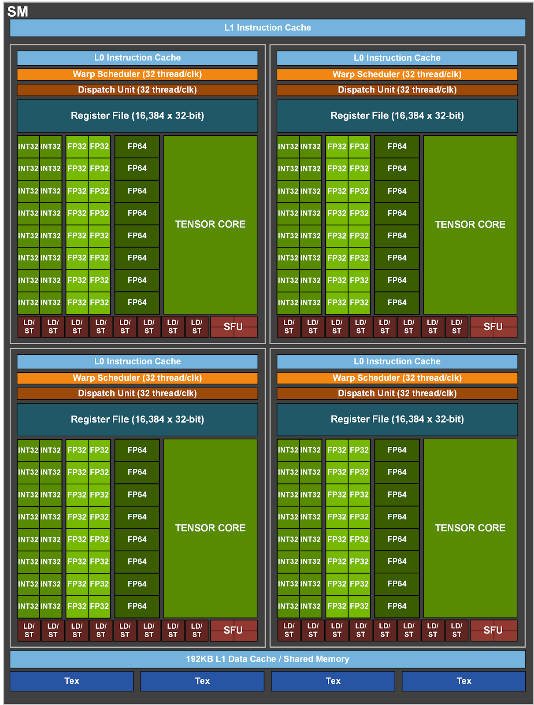
Table 3 compares 32-bit floating-point (FP32) throughput, 64-bit floating-point (FP64) throughput, device-memory capacity, memory bandwidth, and the maximum number of resident threads per SM. Throughput is given in tera floating-point operations per second (TFLOP/s). The devices use High Bandwidth Memory 2 (HBM2) and Graphics Double Data Rate 6X (GDDR6X) memory [4, 5, 6, 10].
| A100 40 GB (GA100) | RTX 3090 (GA102) | |
|---|---|---|
| FP32 throughput | ||
| FP64 throughput | ||
| Device memory | HBM2, | GDDR6X, |
| Maximum resident threads per SM |
The throughput and bandwidth entries are vendor peak values, not measurements from the example programs. GA102 FP64 throughput is of its FP32 throughput, so the RTX 3090 value is after rounding [5].
Array addition
Vector addition
Let and be arrays of floating-point numbers. The program adds to : If every and every before the addition, every output should be 3. The CPU version is one loop.
void add_cpu(int n, const float* x, float* y) {
// One CPU thread processes the array from beginning to end.
for (int i = 0; i < n; ++i) {
y[i] = x[i] + y[i];
}
}A CUDA kernel is a function that runs on the GPU. The CPU launches a
kernel with
<<<number_of_blocks, threads_per_block>>>.
The simplest launch uses one GPU thread, so that thread repeats the CPU
loop.
__global__ void add_one_thread(int n, const float* x, float* y) {
// This loop is serial because the launch below creates only one GPU thread.
for (int i = 0; i < n; ++i) {
y[i] = x[i] + y[i];
}
}
// CPU code: launch one block containing one thread.
add_one_thread<<<1, 1>>>(N, x, y);To use many threads, give each thread a different first array index.
The first line of add_grid is Equation (3)
from Section 1.3.
__global__ void add_grid(int n, const float* x, float* y) {
// This thread begins at one distinct array index.
const int index = blockIdx.x * blockDim.x + threadIdx.x;
// This is the total number of threads created by the launch.
const int stride = blockDim.x * gridDim.x;
// If needed, this thread continues one complete grid farther in the array.
for (int i = index; i < n; i += stride) {
y[i] = x[i] + y[i];
}
}The CPU chooses 256 threads per block and creates enough blocks to cover the array.
const int threads_per_block = 256;
const int number_of_blocks =
(N + threads_per_block - 1) / threads_per_block;
// CPU code: launch the parallel kernel on the GPU.
add_grid<<<number_of_blocks, threads_per_block>>>(N, x, y);
// Wait before the CPU checks the result.
cudaDeviceSynchronize();C++ integer division discards the remainder, so adding
threads_per_block - 1 rounds the number of blocks up. For
,
the launch creates
threads. Threads 0 through 999 perform the addition. Threads 1000
through 1023 test i < n, find it false, make no array
access, and finish. They are still real threads in the kernel launch;
they simply have no array element to process.
For the launch above, each valid thread processes one element. The
i += stride update also lets the same kernel work with
fewer threads: after processing
,
a thread next processes
.
Unified Memory.
The CPU and GPU normally use separate memory allocations. Unified Memory creates allocations that both can address through the same pointers. This simplifies the code, but the array data must still move between CPU memory and GPU memory. Figure 7 shows the difference.
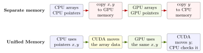
The essential allocation and use are:
float *x = nullptr, *y = nullptr;
const std::size_t bytes = N * sizeof(float);
// CUDA stores the two allocation addresses in x and y.
cudaMallocManaged(&x, bytes);
cudaMallocManaged(&y, bytes);
// CPU initializes x and y.
for (int i = 0; i < N; ++i) {
x[i] = 1.0f;
y[i] = 2.0f;
}
// GPU uses the same pointers.
add_grid<<<number_of_blocks, threads_per_block>>>(N, x, y);
cudaDeviceSynchronize();
// CPU can now check y.
cudaFree(x);
cudaFree(y);Here &x means the address of the pointer variable
x. CUDA needs that address so it can store the allocation
address in x. The complete program asks CUDA to move the
input arrays to GPU memory before the kernel and move the result back
afterward. This keeps the transfer time separate from the kernel time in
the profile; the allocation is still Unified Memory.
All runnable code and measurement records are in this repository:
From the repository root, build and run with:
# Compile the example, then run it.
nvcc -O3 -lineinfo add_grid.cu -o add_grid
./add_gridThe expected output is Max error = 0. The
-lineinfo option lets the profiling tools connect their
reports to source lines.
Profiling
A kernel can be limited by data movement, arithmetic, or the cost of starting the kernel. The following kernel is a simple way to separate the three cases.
__global__ void playground(float* data, int n, int repeats,
float multiplier, float offset) {
// Give this thread one array element.
const int index = blockIdx.x * blockDim.x + threadIdx.x;
if (index < n) {
// Load once, perform repeats updates, then store once.
float value = data[index];
for (int r = 0; r < repeats; ++r) {
value = value * multiplier + offset;
}
data[index] = value;
}
}Memory-bound. Use a large array and few arithmetic updates. The arithmetic finishes quickly, then compute waits for more data.
Compute-bound. Use a large
repeatsvalue. The array element is already available while the arithmetic continues. This is useful work if the updates are required; otherwise the kernel is simply doing unnecessary arithmetic.Overhead-bound. Use a very small array and few updates. The GPU finishes the work quickly, so the fixed cost of launching the kernel becomes a large part of the total time.
Splitting one calculation across many kernels can add another cost. A value kept inside one kernel may have to be written to GPU memory at the end of one kernel and read again by the next. This extra data movement is distinct from kernel launch time.
The array-addition program demonstrates three CUDA tools. Each answers one question.
Compute Sanitizer: is the program accessing memory correctly?
# Check GPU memory accesses.
compute-sanitizer --tool memcheck ./add_gridA correct run prints Max error = 0 and ends with
ERROR SUMMARY: 0 errors [19].
Nsight Systems: where does the complete run spend time?
# Record CPU calls, data movement, and GPU work on one timeline.
nsys profile --trace=cuda --stats=true \
--force-overwrite=true --output=add_grid_systems ./add_gridThe command saves . Open that report in Nsight Systems to see when
the CPU submits work, when the arrays move, and when
add_grid runs [17].
On the office RTX 3090, Nsight Systems measured 8.389 MB moving from
CPU memory to GPU memory, 4.194 MB moving back, and
15.072
for add_grid. The exact command, hardware, driver, and raw
output are recorded in in the code repository. One array contains
four-byte floats, so its size is 4.194 MB. Two input arrays move to the
GPU and one result array moves back.
Nsight Compute: what limits the addition kernel?
# Inspect the launch, arithmetic use, and memory use of add_grid.
ncu --launch-count 1 \
--section LaunchStats \
--section SpeedOfLight \
--section MemoryWorkloadAnalysis \
--force-overwrite -o add_grid_compute ./add_gridThe three section names are Nsight Compute’s names.
LaunchStats reports the number of blocks and threads.
SpeedOfLight compares the kernel’s arithmetic and memory
use with the GPU’s measured limits. MemoryWorkloadAnalysis
reports the kernel’s memory traffic [18, 14].
Array addition reads
,
reads
,
and writes the new
.
Since a float occupies four bytes, the minimum traffic is
bytes. Its effective bandwidth is therefore
For
and the measured kernel time of
15.072 ,
this is 834.9 GB/s. The kernel moves twelve bytes for one addition, so
memory movement, not arithmetic, is the main limit.
Performance limits and failure modes
Section 2 separated three basic limits: data movement, arithmetic, and kernel launch. This section shows how those limits appear in code. Every example follows the same order: identify the problem, compare two implementations, explain the difference, and state what to change. One kernel can have more than one problem.
| Problem | What happens | Main correction |
|---|---|---|
| Memory-bound kernel | Compute waits for array data | Remove unnecessary reads and writes |
| Compute-bound kernel | Arithmetic takes most of the time | Remove unnecessary arithmetic |
| Uncoalesced access | A warp needs many memory transactions | Give adjacent threads adjacent addresses |
| Warp divergence | One warp runs both branches | Group threads that choose the same branch |
| Atomic contention | Threads wait to update one value | Combine updates before the atomic operation |
| Memory latency | Every resident warp is waiting | Keep enough warps available on each SM |
| Launch overhead | The GPU waits for the next launch | Combine very small kernels |
| CPU–GPU transfer | Copies take most of the time | Keep arrays in GPU memory |
The source is in https://github.com/HaowuDuan/cuda-example-for-note. Each
folder under contains unoptimized.cu and
optimized.cu. From the repository root, build all eight
pairs and run one pair with:
# Build every pair, then run the two transpose versions.
make -C failure_modes
./failure_modes/coalescing/unoptimized
./failure_modes/coalescing/optimizedCompare the two times on the same machine during the same session. GPU clock, temperature, driver, and other running programs can change the result.
Memory-bound kernels
A kernel is memory-bound when moving the input and output takes longer than the arithmetic. The arithmetic units then wait for data, and faster arithmetic cannot reduce the running time.
Consider A two-kernel implementation first computes , then computes . For single-precision arrays and ignoring the cache, the bytes moved are
bytes for the first kernel, which reads and and writes ;
bytes for the second kernel, which reads and writes .
The two kernels move bytes in total. A single kernel can read and , compute , and write , moving only bytes. Both versions perform the same arithmetic, but the single kernel never writes or reads the temporary array. Combining the two operations is called kernel fusion. Figure 8 shows the removed write and read.
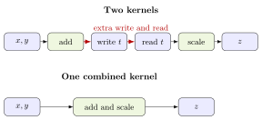
What to change. Move less data. Combine operations when doing so removes an intermediate array. Reuse a value instead of writing it to GPU memory and reading it again. Once memory is already moving data as fast as it can, faster arithmetic will not help [13, 14].
Compute-bound kernels
A kernel is compute-bound when the arithmetic takes longer than loading and storing the data. Being compute-bound is not a problem when every operation is needed. The kernel is wasteful only when the code repeats a calculation or uses a needlessly expensive one.
For each input
,
both supplied kernels evaluate the same degree-32 polynomial. The
coefficients are
for
.
The direct expression and Horner’s form are
The unoptimized kernel
rebuilds every power
from
.
Those loops perform
multiplications, followed by 33 multiply-adds for the sum. The Horner
kernel starts with
and applies
for
.
It uses 32 multiply-adds and never constructs a power separately. The
CUDA function fmaf(u, v, w) computes
.
The chosen degree makes the difference easy to measure. Both kernels still read one float and write one float per element. Horner’s form changes the arithmetic work without changing the bytes moved.
The roofline plot compares both examples with the GPU’s memory and arithmetic limits. It is a reference, not a score. Let be the number of floating-point operations, the minimum bytes read and written, and the measured time. Arithmetic intensity , measured performance , and the roofline bound are Here is peak device-memory bandwidth and is peak arithmetic throughput. The diagonal part of the roof is the memory limit . The horizontal part is the arithmetic limit [7].
For the RTX 3090, Table 3 gives and . The two limits meet at
Table 4 gives the plotted measurements. One multiply-add counts as two floating-point operations. Each program first performs one warm-up. The bandwidth programs report the mean of 20 launches and the polynomial programs report the mean of 10. The table uses the median of seven program runs on the office RTX 3090. The raw output and setup are in in the code repository [8].
| Implementation | FLOP/byte | Median time (ms) | GFLOP/s |
|---|---|---|---|
| Two kernels, | |||
| Fused kernel, | |||
| Direct polynomial powers | |||
| Horner’s form |
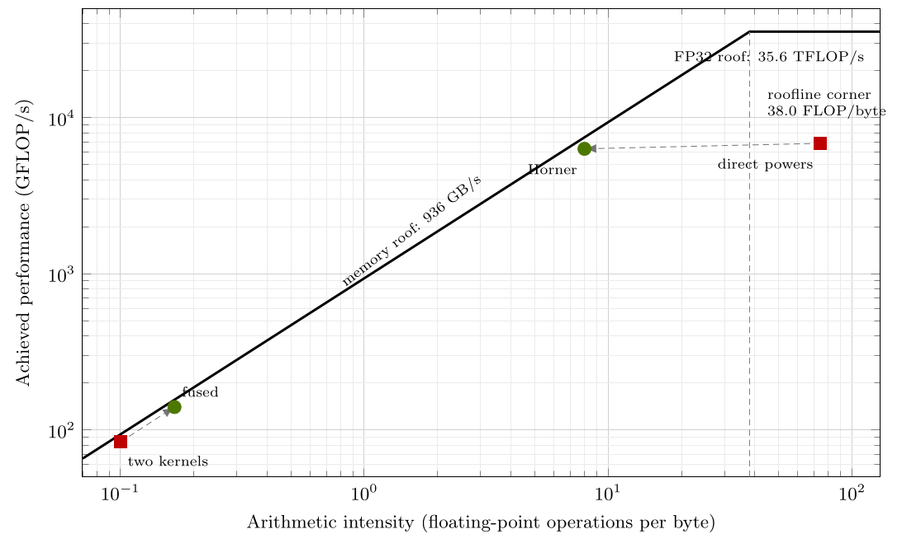
The two memory points reach about of their bandwidth roof. Fusion reduces the time by a factor of . Horner’s form reduces the polynomial time by a factor of . Its plotted GFLOP/s is slightly lower because it performs far fewer operations. The roofline is an upper bound; it does not say that every instruction sequence reaches the horizontal peak.
What to change. First remove arithmetic that does not change the answer. If all the work is needed, measure whether the arithmetic hardware is being used well. Use lower precision only when the required accuracy permits it. For matrix operations, try a tested library before writing a replacement kernel.
Uncoalesced memory access
A warp contains 32 threads. When those threads read or write adjacent floats, the GPU can combine their work into a small number of memory transactions. When their addresses are far apart, the GPU needs more transactions to move the same 32 floats. This slower pattern is called uncoalesced memory access.
The example transposes a matrix. The program divides the matrix into square regions called tiles and assigns one CUDA block to each tile. Figure 10 follows one tile from the matrix to its block and then to one representative thread.
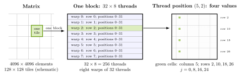
The matrices are stored as flat row-major arrays, so matrix element
has index row * n + column. The constants
tile_width = 32 and block_rows = 8 fix the
tile and block shape. The keyword constexpr marks both
values as compile-time constants. The unoptimized kernel is
constexpr int tile_width = 32;
constexpr int block_rows = 8;
__global__ void transpose_strided_write(const float* input,
float* output, int n) {
const int x = blockIdx.x * tile_width + threadIdx.x;
const int y = blockIdx.y * tile_width + threadIdx.y;
for (int j = 0; j < tile_width; j += block_rows) {
// In a flat n-column matrix, (row, column) is row * n + column.
// Copy input(row=y+j, column=x) to output(row=x, column=y+j).
output[x * n + y + j] = input[(y + j) * n + x];
}
}
constexpr int n = 4096;
const dim3 threads(tile_width, block_rows); // (32, 8)
const dim3 blocks(n / tile_width, n / tile_width); // (128, 128)
transpose_strided_write<<<blocks, threads>>>(input, output, n);The launch creates blocks. One block covers one tile with threads. Each row of 32 threads is one warp. The loop values make each thread process four rows, so the 256 threads cover all values in the tile.
To inspect one warp, hold threadIdx.y and
fixed while threadIdx.x runs from 0 to 31. The variable
then increases by one from one thread to the next. Therefore
the read index
(y + j) * n + xincreases by one, so the warp reads 32 adjacent floats;the write index
x * n + y + jincreases by , so consecutive threads write 4096 floats, or , apart.
The GPU serves the 32 adjacent reads with few memory requests. This pattern is called coalesced access. The writes are not adjacent. One warp writes 32 floats to rows separated by 16 KiB, so the GPU needs many write requests [10, 13].
The optimized kernel first reads adjacent values into shared memory. It then reads the shared array in the transposed direction and writes adjacent values to global memory. Shared memory changes the access direction between the coalesced global read and the coalesced global write.
The extra shared-memory column is padding. Without it, the transposed read asks one part of shared memory for several different values at once, so those values are returned one after another. This is called a shared-memory bank conflict. Padding shifts the addresses so the values can be returned together [13].
__global__ void transpose_tiled(const float* input, float* output, int n) {
// Use 33 columns so column reads use different shared-memory banks.
__shared__ float local[tile_width][tile_width + 1];
int x = blockIdx.x * tile_width + threadIdx.x;
int y = blockIdx.y * tile_width + threadIdx.y;
for (int j = 0; j < tile_width; j += block_rows) {
// Adjacent threads read adjacent input columns into shared memory.
local[threadIdx.y + j][threadIdx.x] = input[(y + j) * n + x];
}
// Do not read the shared tile until every thread has finished writing it.
__syncthreads();
// Swap the block coordinates before writing the transposed square.
x = blockIdx.y * tile_width + threadIdx.x;
y = blockIdx.x * tile_width + threadIdx.y;
for (int j = 0; j < tile_width; j += block_rows) {
// Read rows as columns; adjacent threads now write adjacent output values.
output[(y + j) * n + x] = local[threadIdx.x][threadIdx.y + j];
}
}In the first loop, the 32 threads read adjacent input values into
shared memory. After all threads finish that write, the second loop
reads the shared array in the other direction. Its output index,
(y + j) * n + x, increases by one from thread to thread.
Both global-memory operations now use adjacent addresses.
Measured result. On the office RTX 3090, the median of five process runs gave and for the strided-write kernel, versus and for the tiled kernel. Each process run reported the mean of 20 timed launches after one warm-up launch. The tiled kernel was faster because it replaced the far-apart global writes with adjacent writes. The raw output is in in the code repository.
What to change. Make consecutive threads access consecutive values in global memory. For a transpose, use shared memory to change the direction between the adjacent read and the adjacent write.
Warp divergence
A warp executes one instruction for its 32 threads together. If some
threads choose branch_a and others choose
branch_b, the warp runs one branch and then the other. Only
the threads that chose the current branch do work. If all 32 threads
choose the same branch, the other branch is skipped. Running both
branches because one warp contains both choices is called warp
divergence [10].
Both versions send half the threads to each function, and
branch_a and branch_b perform equal amounts of
arithmetic. Only the assignment of threads to functions changes. In the
unoptimized kernel, neighboring thread indices alternate between the two
functions.
// Adjacent thread indices alternate even, odd, even, odd, ...
const bool take_a = (index & 1) == 0;
output[index] = take_a ? branch_a(input[index])
: branch_b(input[index]);The optimized kernel assigns one branch to a whole warp.
// index / warpSize is identical for all 32 threads in one warp.
const bool take_a = ((index / warpSize) & 1) == 0;
output[index] = take_a ? branch_a(input[index])
: branch_b(input[index]);Figure 11 shows how the two assignments change the work done by each warp without changing the number of calls to either function.
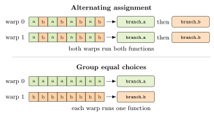
branch_a and then branch_b. After equal
choices are grouped, warp 0 runs only branch_a and warp 1
runs only branch_b. Each row shows eight of the warp’s 32
threads.What to change. When possible, group the work so all threads in one warp choose the same branch. Do not replace the branch with arithmetic unless the arithmetic replacement does less work.
Atomic contention
Suppose two threads add 1 to the same counter. If both read the old value before either writes, both compute and both write . The final value is instead of : one increment is lost.
atomicAdd(counter, 1) prevents the lost increment by
completing one update before another update to the same counter begins.
The answer is correct, but many threads may wait for access to the
counter. This wait is called atomic contention [10].
In the following snippets, index is the thread’s global
index and count is the number of events. The unoptimized
kernel makes every valid thread add 1 directly to the same counter in
GPU memory.
if (index < count) {
// Wait for a turn, then add 1 to the counter in GPU memory.
atomicAdd(counter, 1ULL);
}The program uses 256 threads per block. Each thread first stores
either 1 or 0 in the block’s shared memory. The block adds those 256
values together. Thread 0 then adds the block’s total to
counter. A block therefore calls atomicAdd
once instead of as many as 256 times.
// Reserve one shared-memory entry for each thread.
__shared__ unsigned int local[256];
const int index = blockIdx.x * blockDim.x + threadIdx.x;
// Store 1 for a valid event and 0 otherwise.
local[threadIdx.x] = index < count ? 1U : 0U;
__syncthreads();
// Add pairs of entries until local[0] holds the block total.
for (int offset = blockDim.x / 2; offset > 0; offset /= 2) {
if (threadIdx.x < offset) {
local[threadIdx.x] += local[threadIdx.x + offset];
}
__syncthreads();
}
if (threadIdx.x == 0) {
// Thread 0 adds the block total to the global counter once.
atomicAdd(counter, (unsigned long long)local[0]);
}Figure 12 compares the two versions.
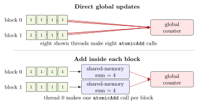
atomicAdd calls. The
block-sum version adds inside each block and makes only two calls. The
supplied code uses 256 threads per block.What to change. Add values together inside each block, then update the counter once per block. If every thread truly must update the same counter separately, changing the number of blocks or threads cannot remove the wait.
Memory latency
The example uses a chain of memory reads:
int position = starting_position;
for (int step = 0; step < steps; ++step) {
// next[position] must return before the next loop iteration can begin.
position = next[position];
}The value returned by next[position] becomes the index
used by the next iteration. The thread cannot begin that next read
early. It must wait for the current read to return. The time between
starting a read and receiving its value is called memory
latency.
While one warp waits, the SM can run another warp. The SM becomes idle only if all warps currently on it are waiting. The two programs perform the same reads with the same total number of threads; only the block size changes.
| Threads per block | Warps supplied by each block | |
|---|---|---|
| Unoptimized | 32 | 1 |
| Optimized | 256 | 8 |
An SM can hold only a limited number of blocks at once. With 32-thread blocks, it can reach that block limit while holding relatively few warps. The 256-thread blocks provide more warps that can run while another warp waits [9, 11]. Figure 13 shows the idea; it does not show the exact number of warps on an SM.
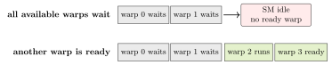
What to change. Choose a block size that lets each SM hold enough warps to provide other work during a memory wait. Nsight Compute calls the fraction of the SM’s thread capacity in use occupancy. Maximum occupancy is not the goal: once a ready warp is usually available, adding more warps may not make the kernel faster.
Kernel launch overhead
The CPU and CUDA driver need time to submit each kernel. The CPU does not wait for the submitted kernel to finish. The time needed to submit one kernel is called launch overhead. If each kernel finishes before the CPU can submit the next kernel, the GPU sits idle between kernels. Adding blocks to the tiny kernels does not remove the gaps between launches.
The supplied example uses 10,000 steps to make the launch cost easy to see. The step count is an example parameter, not a measured hardware limit. The unoptimized CPU loop submits one kernel per step.
// The CPU submits a separate kernel launch for every tiny step.
for (int step = 0; step < 10000; ++step) {
one_tiny_step<<<1, 32>>>(value);
}The optimized version submits once and moves the loop into the kernel.
__global__ void fused_tiny_steps(float* value, int steps) {
// One thread performs the same 10,000 updates inside one kernel launch.
if (blockIdx.x == 0 && threadIdx.x == 0) {
float result = value[0];
for (int step = 0; step < steps; ++step) {
result += 1.0f;
}
value[0] = result;
}
}
// The CPU now pays the launch cost once.
fused_tiny_steps<<<1, 32>>>(value, 10000);Figure 14 shows what the CPU and GPU do over time in the two versions.
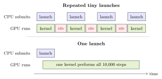
What to change. Put several small steps in one kernel when possible. A CUDA Graph records a repeated group of launches and lets the CPU submit the group with less repeated work. Nsight Systems shows the CPU launch calls and the idle gaps on the GPU timeline [15].
Host-device transfer overhead
Copying an array between CPU and GPU memory can take longer than running a kernel on the array. A program that copies both inputs to the GPU and the result back on every step may therefore spend most of its time copying. The input and output copies usually cross Peripheral Component Interconnect Express (PCIe), not the GPU’s own device-memory connection. The copy time is called host-device transfer overhead. Measure the copies as well as the kernel.
The supplied programs choose 20 steps. The unoptimized CPU loop makes three copies per step across PCIe.
for (int step = 0; step < 20; ++step) {
// Move both inputs to the GPU again on every iteration.
cudaMemcpy(x, host_x, bytes, cudaMemcpyHostToDevice);
cudaMemcpy(y, host_y, bytes, cudaMemcpyHostToDevice);
vector_add<<<blocks, threads>>>(x, y, output, count);
// Move the result back before starting the next iteration.
cudaMemcpy(host_output, output, bytes, cudaMemcpyDeviceToHost);
}The optimized host code leaves the arrays on the GPU between kernel launches.
// Copy the inputs once and leave them in GPU memory.
cudaMemcpy(x, host_x, bytes, cudaMemcpyHostToDevice);
cudaMemcpy(y, host_y, bytes, cudaMemcpyHostToDevice);
for (int step = 0; step < 20; ++step) {
vector_add<<<blocks, threads>>>(x, y, output, count);
}
// Copy the final result back after all 20 launches.
cudaMemcpy(host_output, output, bytes, cudaMemcpyDeviceToHost);Figure 15 shows which transfers disappear when the arrays remain on the GPU between launches.
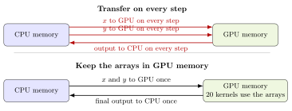
Both programs use the same kind of CPU memory. The only difference being tested is how often the arrays are copied.
What to change. Leave arrays in GPU memory while consecutive kernels use them. Copy back only the values the CPU actually needs [13].
Sources
The CUDA Refresher posts supply the CPU and GPU model, library map, and programming model. NVIDIA’s updated CUDA introduction supplies the array-addition example. Betcke and Scroggs explain the connection between warps and SMs. NVIDIA’s Ampere article supplies the GA100 and A100 architecture. NVIDIA’s GA102 whitepaper and RTX 3090 specifications supply the consumer-GPU comparison.
He supplies the three names compute-bound, memory-bound, and overhead-bound. Current NVIDIA documentation supplies the tool names and CUDA behavior used in Section 3. Kirk and Hwu’s textbook explains why an SM can run another warp while one warp waits for memory.
Williams, Waterman, and Patterson supply the roofline model. The saved RTX 3090 measurement record supplies the four points in Figure 9.
Further reading. NVIDIA’s CUDA C++ Programming Guide and CUDA C++ Best Practices Guide are the natural next references.
- Pradeep Gupta. CUDA Refresher: Reviewing the Origins of GPU Computing. NVIDIA Technical Blog, April 23, 2020. https://developer.nvidia.com/blog/cuda-refresher-reviewing-the-origins-of-gpu-computing/.
- Pradeep Gupta. CUDA Refresher: The GPU Computing Ecosystem. NVIDIA Technical Blog, May 21, 2020. https://developer.nvidia.com/blog/cuda-refresher-the-gpu-computing-ecosystem/.
- Pradeep Gupta. CUDA Refresher: The CUDA Programming Model. NVIDIA Technical Blog, June 26, 2020. https://developer.nvidia.com/blog/cuda-refresher-the-cuda-programming-model/.
- Ronny Krashinsky, Olivier Giroux, Stephen Jones, Nick Stam, and Sridhar Ramaswamy. NVIDIA Ampere Architecture In-Depth. NVIDIA Technical Blog, May 14, 2020. https://developer.nvidia.com/blog/nvidia-ampere-architecture-in-depth/.
- NVIDIA Corporation. NVIDIA Ampere GA102 GPU Architecture. Architecture whitepaper, version 2.1, 2021. https://www.nvidia.com/content/PDF/nvidia-ampere-ga-102-gpu-architecture-whitepaper-v2.1.pdf. Accessed August 26, 2026.
- NVIDIA Corporation. GeForce RTX 3090 Family Specifications. https://www.nvidia.com/en-us/geforce/graphics-cards/30-series/rtx-3090-3090ti/. Accessed August 26, 2026.
- Samuel Williams, Andrew Waterman, and David Patterson. Roofline: An Insightful Visual Performance Model for Multicore Architectures. Communications of the ACM, 52(4):65–76, April 2009. https://doi.org/10.1145/1498765.1498785.
- Measurement record. Roofline Measurements on the Office RTX 3090. September 1, 2026. Raw output and derivation in https://github.com/HaowuDuan/cuda-example-for-note, .
- David B. Kirk and Wen-mei W. Hwu. Programming Massively Parallel Processors: A Hands-on Approach. Morgan Kaufmann, 2010. ISBN 978-0-12-381472-2.
- NVIDIA Corporation. CUDA Programming Guide. https://docs.nvidia.com/cuda/cuda-programming-guide/index.html. Accessed August 24, 2026.
- NVIDIA Corporation. NVIDIA Ampere GPU Architecture Tuning Guide. https://docs.nvidia.com/cuda/ampere-tuning-guide/index.html. Accessed September 1, 2026.
- NVIDIA Corporation. CUDA C++ Memory Model. https://docs.nvidia.com/cuda/cuda-programming-guide/05-appendices/cuda-cpp-memory-model.html. Accessed August 24, 2026.
- NVIDIA Corporation. CUDA C++ Best Practices Guide. https://docs.nvidia.com/cuda/cuda-c-best-practices-guide/index.html. Accessed August 26, 2026.
- NVIDIA Corporation. Nsight Compute Profiling Guide. https://docs.nvidia.com/nsight-compute/ProfilingGuide/index.html. Accessed August 26, 2026.
- NVIDIA Corporation. Employing CUDA Graphs in a Dynamic Environment. NVIDIA Technical Blog, October 21, 2021. https://developer.nvidia.com/blog/employing-cuda-graphs-in-a-dynamic-environment/. Accessed August 26, 2026.
- NVIDIA Corporation. NVIDIA CUDA-X Libraries. https://developer.nvidia.com/cuda/cuda-x-libraries. Accessed August 24, 2026.
- NVIDIA Corporation. NVIDIA Nsight Systems. https://developer.nvidia.com/nsight-systems. Accessed August 24, 2026.
- NVIDIA Corporation. NVIDIA Nsight Compute. https://developer.nvidia.com/nsight-compute/. Accessed August 24, 2026.
- NVIDIA Corporation. Compute Sanitizer. https://docs.nvidia.com/compute-sanitizer/ComputeSanitizer/index.html. Accessed August 24, 2026.